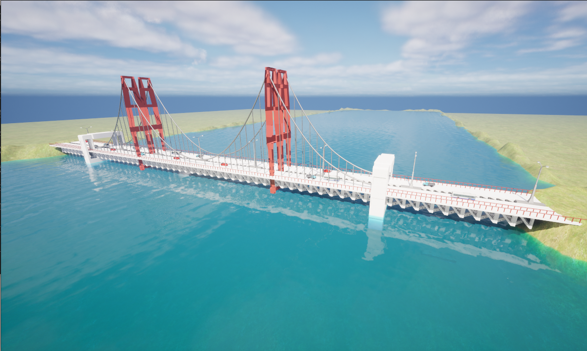
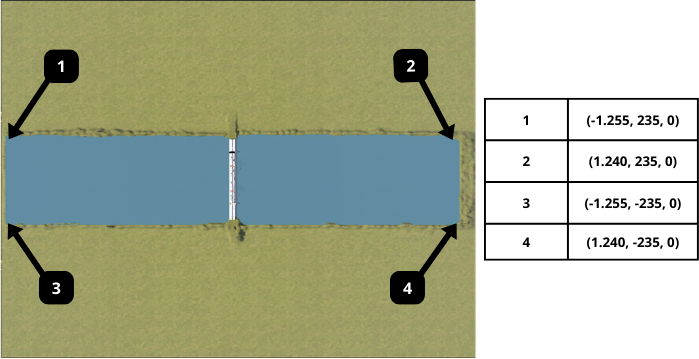
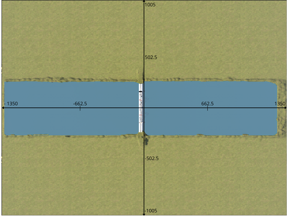
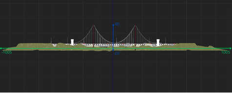
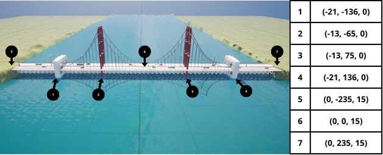

Bridge

Overview
The Bridge environment is a technical simulation space designed for infrastructure inspection and aerial-to-underwater transitions. It features a central suspension bridge crossing a straight channel. This environment is ideal for testing autonomous navigation, multi-agent coordination, and sensor fusion in coastal settings.
Environment Dimensions & Coordinates
BiguaSim uses a coordinate system where Z=0 represents the water surface. The maps below provide the exact spatial constraints required for mission planning.
Water Area and Operational Freedom

The coordinates above define the water surface boundaries (the main channel). However, the environment is fully open-world; agents (especially UAVs and ground vehicles) are free to operate across the entire landscape, including the banks and bridge structures, without artificial constraints.
Water Zone: Defined by the coordinates (-1.255, 235) to (1.240, -235).
Extended Map: The simulation continues beyond the water, allowing for complex multi-domain missions (Sea-Air-Land).
Coordinate Grid (Top View)

The top-down view shows the channel’s axial alignment. The longitudinal axis spans from -1350 to 1350 units, while the lateral axis ranges from -1005 to 1005 units. The bridge is centered at the origin, providing a consistent reference point for global positioning.
Depth and Altitude Profile

- This cross-section view illustrates the vertical operational envelope:
Maximum Altitude: Up to 80 meters above sea level (ideal for UAV bridge inspection). Maximum Depth: The channel bed reaches down to -20 meters, allowing for ROV sub-surface maneuvers. Vertical Reference: The green line indicates the water surface (Z=0).
Landmarks and Waypoints

- To assist in automated docking or station-keeping, several key landmarks have been mapped:
Pillar Bases (1-4): Structural supports located between -136 and 136 on the Y-axis. Bridge Deck (5-7): Elevated points at Z=15 meters, useful for drone landing or proximity sensing tests.
Semantic Segmentation Labels
The following table defines the semantic segmentation IDs and their corresponding RGB values, mapped to represent each mesh type realistically within the simulation.
Folder Title |
Stencil Value |
RGB Value |
|---|---|---|
None |
0 |
{0, 0, 0} |
Sky |
19 |
{0, 53, 65} |
Water |
38 |
{35, 196, 244} |
Landscape |
48 |
{85, 152, 34} |
Road/Asphalt |
6 |
{81, 13, 36} |
HolodeckAgent |
1 |
{153, 108, 6} |
Truck |
5 |
{206, 190, 59} |
Bus |
7 |
{115, 176, 195} |
Car0 |
10 |
{29, 26, 199} |
Car1 |
11 |
{102, 16, 239} |
StaticMeshActor |
2 |
{112, 105, 191} |
Generic/Structure |
9 |
{135, 169, 180} |
PostProcessVolume |
13 |
{156, 198, 23} |
Any |
255 |
{255, 255, 255} |